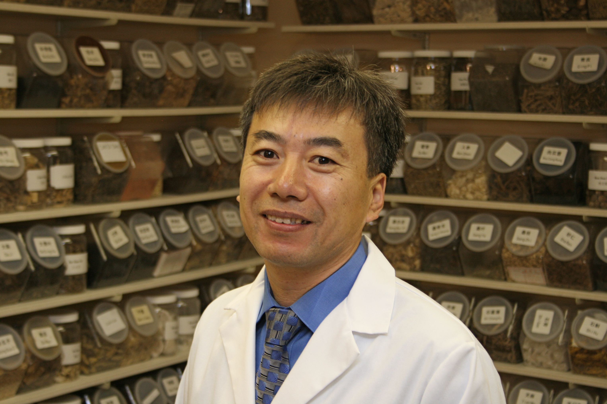

Dr. DaYong Hou, L.Ac.
DaYong Hou graduated from Hei Long Jiang University of Traditional Chinese Medicine, Harbin, China in 1989. Prior to and after completion of this program, Dr. Hou further developed his expertise by training with his father, Dr. LuSheng Hou, a well-known western and eastern doctor and leader of Acheng hospital. DaYong Hou specialized in both individualized treatment and in diagnosis in herbs, acupuncture, Tui Na(Chinese medical massage) and traditional rehabilitation exercise.He is presently an instructor and a supervisor at the Colorado School of Traditional Chinese Medicine.
Dr. Hou is also national board certified and state licensed acupuncturist in Colorado. As a professional member of the Acupuncture Association of Colorado, he has rich clinical experiences and a strong understanding of Chinese Medicine Theory. He has helped people with a wide variety of physical and psychological illness.
Dr. Hou has had much success with treating nervous system diseases, such as: paralysis, stroke, sports injuries, all kinds of pains, chronic diseases, stress and female problems (infertility and more).
Dr. Dayong Hou has the following licenses and certifications:
- Licensed Acupuncturist, State of Colorado
- Diplomate in Acupuncture, National Certification Commission for Acupuncture and Oriental Medicine
Click here to get information about starting the healing process today.